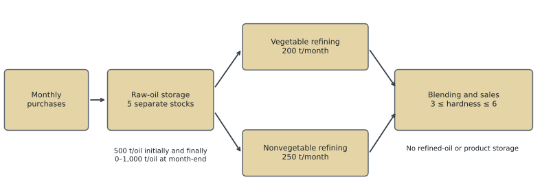
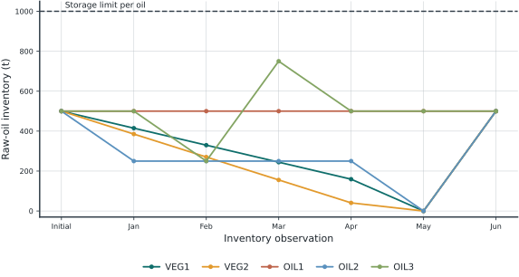
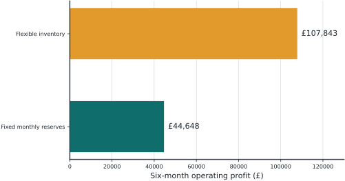

| Month | VEG1 | VEG2 | OIL1 | OIL2 | OIL3 |
|---|---|---|---|---|---|
| Jan | 110 | 120 | 130 | 110 | 115 |
| Feb | 130 | 130 | 110 | 90 | 115 |
| Mar | 110 | 140 | 130 | 100 | 95 |
| Apr | 120 | 110 | 120 | 120 | 125 |
| May | 100 | 120 | 150 | 110 | 105 |
| Jun | 90 | 100 | 140 | 80 | 135 |
1 Blending and Inventory Planning
NoteSource and scope
Adapted from Food Manufacture 1, Section 12.1 of Williams (2013). The numerical data and neutral oil labels are retained for comparison with the source. The explanation is rewritten for chemical engineering students. We explicitly charge storage on every month-end inventory, including June. New comparison scenarios are added in the discussion.
1.1 Problem Statement
A food-processing plant purchases five raw oils, refines them on two production lines, and blends the refined oils into a single product. The planning horizon is January through June. The plant must choose how much of each oil to purchase, process, and hold each month to maximize total operating profit.
VEG1 and VEG2 use the vegetable-oil line. OIL1, OIL2, and OIL3 use the nonvegetable-oil line. These labels identify feedstocks, not individual chemical compounds. All quantities are measured in metric tonnes (t); monetary values are in pounds sterling (£).

1.1.1 Purchase prices and product quality
The purchase price is known for each delivery month. There is no purchase-quantity limit. Purchases delivered during a month are available for processing in that month.
All entries in the price table are £/t. The final product sells for £150/t, with no demand limit.
| Oil | Hardness index |
|---|---|
| VEG1 | 8.8 |
| VEG2 | 6.1 |
| OIL1 | 2.0 |
| OIL2 | 4.2 |
| OIL3 | 5.0 |
The final blend must have a hardness index between 3 and 6, inclusive. In this teaching model, hardness is assumed to be a mass-weighted average. This is an empirical blending assumption, not a general physical law for food properties.
1.1.2 Operating restrictions
- At most 200 t/month of vegetable oils can be refined.
- At most 250 t/month of nonvegetable oils can be refined.
- Refining has unit mass yield. Refining cost is neglected.
- Each raw oil has a separate inventory limit of 1,000 t, applied at month-end.
- Holding cost is £5 per tonne of month-end inventory, charged in each of the six months.
- Initial inventory is 500 t of each raw oil. Final inventory must also be 500 t of each oil.
- Refined oils and final product cannot be stored. All product made in a month is sold in that month.
The model aggregates operations within each month. It does not describe daily tank levels, batch sequences, or delivery timing. A month-end inventory limit therefore does not certify that a detailed within-month tank schedule is feasible.
Task. Determine the purchasing, processing, and inventory plan with the highest six-month operating profit.
1.2 Model Formulation
1.2.1 Sets and parameters
Let \(I=\{\mathrm{VEG1},\mathrm{VEG2},\mathrm{OIL1},\mathrm{OIL2},\mathrm{OIL3}\}\) and \(T=\{1,\ldots,6\}\). The subsets \(V\) and \(N\) contain the vegetable and nonvegetable oils, respectively.
| Symbol | Meaning | Units / value |
|---|---|---|
| \(c_{it}\) | Price of oil \(i\) delivered in month \(t\) | £/t, given above |
| \(h_i\) | Hardness index of oil \(i\) | Index units, given above |
| \(r\) | Product selling price | £150/t |
| \(k\) | Charge per tonne of month-end inventory | £5/t per monthly charge |
| \(C_V,C_N\) | Monthly refining capacities | 200 and 250 t/month |
| \(S^{\max}\) | Inventory limit per oil | 1,000 t |
| \(s_{i0},S_i^F\) | Initial and required final inventories | 500 t each |
| \(H^{\min},H^{\max}\) | Blend hardness limits | 3 and 6 |
Prices and capacities are parameters. They are known inputs, not quantities selected by the optimizer.
1.2.2 Decision variables
| Variable | Meaning | Domain |
|---|---|---|
| \(b_{it}\) | Oil \(i\) purchased for delivery in month \(t\) | Nonnegative, t |
| \(u_{it}\) | Oil \(i\) refined and blended in month \(t\) | Nonnegative, t |
| \(s_{it}\) | Oil \(i\) remaining at the end of month \(t\) | Nonnegative, t |
| \(q_t\) | Product manufactured and sold in month \(t\) | Nonnegative, t |
A separate refined-oil inventory is unnecessary because refined oils cannot be stored. With unit yield, the amount refined equals the amount entering the blend.
1.2.3 Objective: revenue less purchasing and holding costs
\[ \max\; \Pi = r\sum_{t\in T}q_t -\sum_{t\in T}\sum_{i\in I}c_{it}b_{it} -k\sum_{t\in T}\sum_{i\in I}s_{it}. \tag{1.1}\]
Purchase costs are charged to \(b_{it}\), not \(u_{it}\). Oil consumed today may have been bought earlier at a different price. Confusing purchases with consumption removes the economic role of inventory.
Initial inventory is already owned, so its historical purchase cost is outside this planning horizon. Requiring the same final inventory prevents the plan from gaining profit simply by running down the opening stock. This is a finite-horizon operating-profit measure, rather than a full accounting profit including all fixed plant costs.
1.2.4 Inventory balances
For every \(i\in I\) and \(t\in T\),
\[ s_{i,t-1}+b_{it}=u_{it}+s_{it},\qquad s_{i0}=500. \tag{1.2}\]
This is the material balance opening stock + receipts = consumption + closing stock. Its boundary conditions are
\[ 0\le s_{it}\le 1000,\qquad s_{i6}=500\quad(i\in I). \]
Summing Equation 1.2 over all six months gives \(\sum_t b_{it}=\sum_t u_{it}\) for every oil. This identity is a useful independent check on the computed solution.
1.2.5 Refining capacities and total product
For each month,
\[ \sum_{i\in V}u_{it}\le 200,\qquad \sum_{i\in N}u_{it}\le 250, \]
\[ q_t=\sum_{i\in I}u_{it}. \tag{1.3}\]
Capacities apply to processing, not purchasing. Buying more than 450 t in a month is permissible if the excess is held as raw inventory.
1.2.6 Blend-quality constraints
When \(q_t>0\), the hardness of the blend is
\[ H_t=\frac{\sum_i h_i u_{it}}{q_t}. \]
Because \(q_t\) is nonnegative, the quality bounds can be written in linear form:
\[ 3q_t\le\sum_{i\in I}h_i u_{it}\le6q_t. \tag{1.4}\]
The ratio is not placed directly in the optimization model. The linear form also handles a month with no production: Equation 1.3 and nonnegativity force all \(u_{it}\) to zero, making both quality inequalities valid. The hardness value itself is undefined in such a month and should not be reported as zero.
All objective and constraint expressions are linear in the decision variables. The formulation is therefore a linear program (LP). Fractional tonnes are physically appropriate at this planning scale.
TipFormulation check
If refining had oil-specific yields below one, the inventory balance would still use raw feed consumption, while product mass and blend quality would need to use the corresponding refined output. Changing the yield assumption requires changing those equations together.
1.3 Pyomo Implementation
The complete runnable program is models/food_manufacture.py. The code below is read directly from that file during rendering, so the displayed formulation and the solved formulation share the same source.
1.3.1 Step 1: imports and input data
import pyomo.environ as pyo
MONTHS = ["Jan", "Feb", "Mar", "Apr", "May", "Jun"]
OILS = ["VEG1", "VEG2", "OIL1", "OIL2", "OIL3"]
VEGETABLE = ["VEG1", "VEG2"]
NONVEGETABLE = ["OIL1", "OIL2", "OIL3"]
PRICES = [
[110, 120, 130, 110, 115],
[130, 130, 110, 90, 115],
[110, 140, 130, 100, 95],
[120, 110, 120, 120, 125],
[100, 120, 150, 110, 105],
[90, 100, 140, 80, 135],
]
HARDNESS = dict(zip(OILS, [8.8, 6.1, 2.0, 4.2, 5.0]))The monthly price list follows the order in OILS. The model converts this list into a dictionary indexed by oil and month. Consistent indexing is essential: a correct equation with mismatched prices solves the wrong problem.
1.3.2 Step 2: build the model
def build_model(storage_cost=5.0, vegetable_capacity=200.0,
nonvegetable_capacity=250.0, carryover=True):
m = pyo.ConcreteModel(name="Food manufacture: blending and inventory")
m.I = pyo.Set(initialize=OILS, ordered=True)
m.T = pyo.RangeSet(1, 6)
m.V = pyo.Set(initialize=VEGETABLE)
m.N = pyo.Set(initialize=NONVEGETABLE)
m.price = pyo.Param(m.I, m.T,
initialize={(i, t): PRICES[t-1][OILS.index(i)] for i in OILS for t in range(1, 7)})
m.hardness = pyo.Param(m.I, initialize=HARDNESS)
m.storage_cost = pyo.Param(initialize=storage_cost)
m.vegetable_capacity = pyo.Param(initialize=vegetable_capacity)
m.nonvegetable_capacity = pyo.Param(initialize=nonvegetable_capacity)
m.buy = pyo.Var(m.I, m.T, domain=pyo.NonNegativeReals)
m.use = pyo.Var(m.I, m.T, domain=pyo.NonNegativeReals)
m.stock = pyo.Var(m.I, m.T, bounds=(0, 1000))
m.product = pyo.Var(m.T, domain=pyo.NonNegativeReals)
def inventory_rule(m, i, t):
previous = 500 if t == 1 else m.stock[i, t-1]
return previous + m.buy[i, t] == m.use[i, t] + m.stock[i, t]
m.inventory = pyo.Constraint(m.I, m.T, rule=inventory_rule)
m.terminal = pyo.Constraint(m.I, rule=lambda m, i: m.stock[i, 6] == 500)
m.mass_balance = pyo.Constraint(m.T,
rule=lambda m, t: m.product[t] == sum(m.use[i, t] for i in m.I))
m.vegetable_limit = pyo.Constraint(m.T,
rule=lambda m, t: sum(m.use[i, t] for i in m.V) <= m.vegetable_capacity)
m.nonvegetable_limit = pyo.Constraint(m.T,
rule=lambda m, t: sum(m.use[i, t] for i in m.N) <= m.nonvegetable_capacity)
m.hardness_min = pyo.Constraint(m.T,
rule=lambda m, t: sum(m.hardness[i]*m.use[i, t] for i in m.I) >= 3*m.product[t])
m.hardness_max = pyo.Constraint(m.T,
rule=lambda m, t: sum(m.hardness[i]*m.use[i, t] for i in m.I) <= 6*m.product[t])
if not carryover:
# Keep the initial reserve unchanged each month: purchases equal use.
m.fixed_stock = pyo.Constraint(m.I, m.T,
rule=lambda m, i, t: m.stock[i, t] == 500)
m.revenue = pyo.Expression(expr=150*sum(m.product[t] for t in m.T))
m.purchase_cost = pyo.Expression(expr=sum(m.price[i,t]*m.buy[i,t] for i in m.I for t in m.T))
m.holding_cost = pyo.Expression(expr=m.storage_cost*sum(m.stock[i,t] for i in m.I for t in m.T))
m.profit = pyo.Objective(expr=m.revenue-m.purchase_cost-m.holding_cost, sense=pyo.maximize)
return mConcreteModel creates a model with data already supplied. A Set defines an index set, a Param stores fixed data, and a Var declares a decision variable. A constraint rule is called once for each requested index. For example, inventory_rule creates 30 separate material balances, one per oil-month pair.
The function arguments permit controlled scenario changes. With carryover=False, inventory is fixed at 500 t for every oil in every month. This is a fixed-reserve comparison, not a zero-inventory model.
1.3.3 Step 3: solve and check termination
def solve_model(m):
solver = pyo.SolverFactory("appsi_highs")
if not solver.available(exception_flag=False):
raise RuntimeError("HiGHS is unavailable. Install highspy in the active environment.")
result = solver.solve(m, load_solutions=False)
if not pyo.check_optimal_termination(result):
raise RuntimeError(f"No verified optimum: {result.solver.termination_condition}")
m.solutions.load_from(result)
return mload_solutions=False postpones loading variable values until optimal termination has been verified. An infeasible or unbounded model must be investigated before any numerical plan is interpreted.
The minimal call sequence is:
model = build_model()
model = solve_model(model)
print(f"Optimal profit: £{pyo.value(model.profit):,.2f}")
for t in model.T:
print(MONTHS[t-1], pyo.value(model.product[t]))The accompanying program also exports purchase, consumption, inventory, and scenario tables to results/. Its validate function independently recalculates material balances, quality, capacities, terminal inventory, and objective value. These checks verify implementation consistency; they do not establish that every simplifying assumption describes a real plant.
1.4 Optimal Solution
1.4.1 Economic result
| Quantity | Value (GBP) |
|---|---|
| Sales revenue | 405,000.00 |
| Raw-oil purchases | 244,657.41 |
| Inventory holding cost | 52,500.00 |
| Operating profit | 107,842.59 |
The plant produces 2,700 t over six months. The maximum operating profit is £107,842.59.
The following tables show one optimal plan. A linear program can have multiple optimal schedules; a different solver version may return a different plan with the same objective. Compare feasibility and full-precision profit before concluding that another schedule is wrong.
1.4.2 Purchases, processing, and inventory
Purchases (t). These are receipts during the indicated month.
| Month | VEG1 | VEG2 | OIL1 | OIL2 | OIL3 |
|---|---|---|---|---|---|
| Jan | 0.00 | 0.00 | 0.00 | 0.00 | 0.00 |
| Feb | 0.00 | 0.00 | 0.00 | 0.00 | 0.00 |
| Mar | 0.00 | 0.00 | 0.00 | 0.00 | 750.00 |
| Apr | 0.00 | 0.00 | 0.00 | 0.00 | 0.00 |
| May | 0.00 | 0.00 | 0.00 | 0.00 | 0.00 |
| Jun | 659.26 | 540.74 | 0.00 | 750.00 | 0.00 |
Oil refined and blended (t). Each row sums to the product quantity in that month.
| Month | VEG1 | VEG2 | OIL1 | OIL2 | OIL3 |
|---|---|---|---|---|---|
| Jan | 85.19 | 114.81 | 0.00 | 250.00 | 0.00 |
| Feb | 85.19 | 114.81 | 0.00 | 0.00 | 250.00 |
| Mar | 85.19 | 114.81 | 0.00 | 0.00 | 250.00 |
| Apr | 85.19 | 114.81 | 0.00 | 0.00 | 250.00 |
| May | 159.26 | 40.74 | 0.00 | 250.00 | 0.00 |
| Jun | 159.26 | 40.74 | 0.00 | 250.00 | 0.00 |
Month-end raw-oil inventory (t). Each oil starts at 500 t and returns to 500 t in June.
| Month | VEG1 | VEG2 | OIL1 | OIL2 | OIL3 |
|---|---|---|---|---|---|
| Jan | 414.81 | 385.19 | 500.00 | 250.00 | 500.00 |
| Feb | 329.63 | 270.37 | 500.00 | 250.00 | 250.00 |
| Mar | 244.44 | 155.56 | 500.00 | 250.00 | 750.00 |
| Apr | 159.26 | 40.74 | 500.00 | 250.00 | 500.00 |
| May | 0.00 | 0.00 | 500.00 | 0.00 | 500.00 |
| Jun | 500.00 | 500.00 | 500.00 | 500.00 | 500.00 |

1.4.3 Feasibility and capacity use
| Month | Product (t) | Vegetable (t) | Nonvegetable (t) | Hardness | Vegetable slack (t) | Nonvegetable slack (t) |
|---|---|---|---|---|---|---|
| Jan | 450.00 | 200.00 | 250.00 | 5.56 | 0.00 | 0.00 |
| Feb | 450.00 | 200.00 | 250.00 | 6.00 | 0.00 | 0.00 |
| Mar | 450.00 | 200.00 | 250.00 | 6.00 | 0.00 | 0.00 |
| Apr | 450.00 | 200.00 | 250.00 | 6.00 | 0.00 | 0.00 |
| May | 450.00 | 200.00 | 250.00 | 6.00 | 0.00 | 0.00 |
| Jun | 450.00 | 200.00 | 250.00 | 6.00 | 0.00 | 0.00 |
The largest independently recomputed material-balance residual is 2.84e-14 t. All tested bounds, quality limits, terminal stocks, and objective calculations pass a tolerance of \(10^{-6}\).
Tables round to two decimal places for readability. Validation uses unrounded values; small apparent discrepancies after rounding are not material-balance errors.
1.5 Brief Discussion
1.5.1 Inventory has a measurable economic value
Compare the optimized inventory policy with a policy that keeps every oil at 500 t at the end of every month. Under the latter policy, monthly purchases must equal monthly consumption. The two cases use the same prices, capacities, quality limits, opening and closing inventories, and holding-cost convention.

Allowing stocks to vary increases profit by £63,194.44 over six months. This value includes both better purchase timing and the ability to reduce inventory holding costs; it is not purely a price-arbitrage gain.
1.5.2 Both refining lines are fully utilized
The reference solution processes 200 t of vegetable oils and 250 t of nonvegetable oils each month. Both capacity constraints are binding. However, binding alone does not prove that a constraint has a positive marginal economic value. Re-solving after a specified capacity change measures its value directly.
| Scenario | Profit (GBP) | Change (GBP) |
|---|---|---|
| Reference | 107,842.59 | 0.00 |
| Fixed monthly reserves | 44,648.15 | -63,194.44 |
| Holding cost = 2 | 141,592.59 | 33,750.00 |
| Holding cost = 10 | 62,842.59 | -45,000.00 |
| Vegetable capacity +1 | 108,192.22 | 349.63 |
| Nonvegetable capacity +1 | 108,194.26 | 351.67 |
In each capacity experiment, +1 means one additional tonne of capacity in every month, not one tonne for the whole horizon. The profit changes are finite scenario differences across six months. They are not individual monthly shadow prices, and should not be extrapolated to a large expansion without re-solving. No investment cost is included.
1.5.3 Cheap oil is not automatically the best ingredient
Oil selection depends on purchase timing, the hardness limits, and the two refining capacities together. In the displayed optimum, OIL1 is not processed, despite its low hardness. Its 500 t reserve remains unused in this optimum. Consuming that reserve would require purchasing OIL1 again to meet its oil-specific terminal requirement, so the relevant economics include its replacement cost. The upper hardness bound is active in several months, illustrating how blend quality couples the consumption of different oils.
1.5.4 Boundary conditions affect the reported profit
June closing inventory is 2,500 t in total, so the June holding charge is £12,500. Omitting this charge would increase the reported objective by exactly £12,500 while leaving optimal decisions unchanged, because June inventory is fixed. A comparison with another implementation must use the same accounting convention.
1.5.5 Short exercises
- Set the holding cost to zero. Predict which inventory decisions might change, then solve and compare the plan.
- Reduce the maximum hardness from 6.0 to 5.5. Determine whether both refining lines can still operate at capacity and quantify the profit change.
- Remove the final-inventory requirements. Explain why the resulting profit is not directly comparable to the reference profit.
- Add a monthly sales limit of 400 t. Identify which refining capacities remain binding and explain the new blend.
Report the change in profit, the constraints that determine the new plan, and a short physical explanation. A solver status by itself is not an engineering interpretation.